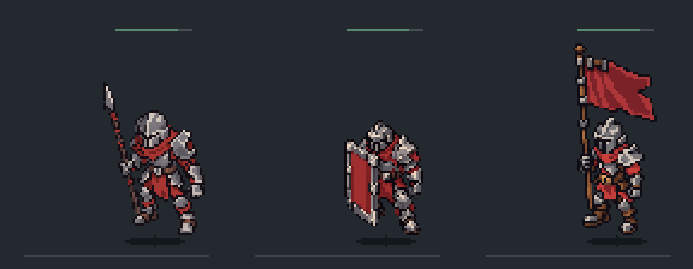

타격 VFX · 공격별 시안 3종
좌→우: 공격형 / 수비형 / 버프형 · 모두 같은 도트 3배
소리 없음 · 게임 미적용 · 시안용 숫자와 타이밍
기술병 · 금속 타격

집중 공격 시각 검사
단일 포탑 · 방향성 수정 타격
집중 공격 시각 검사
범위 포탑 · 소형 수정 파편
집중 공격 시각 검사
집중 공격은 대상당 45ms 간격 20회 입력을 사용한 시각 검사입니다. 명중 효과는 100ms 간격으로 제한하고 숫자는 일부를 묶어 표시한 제안입니다. 실제 게임 피해 판정·공격속도·밸런스 결과가 아닙니다.